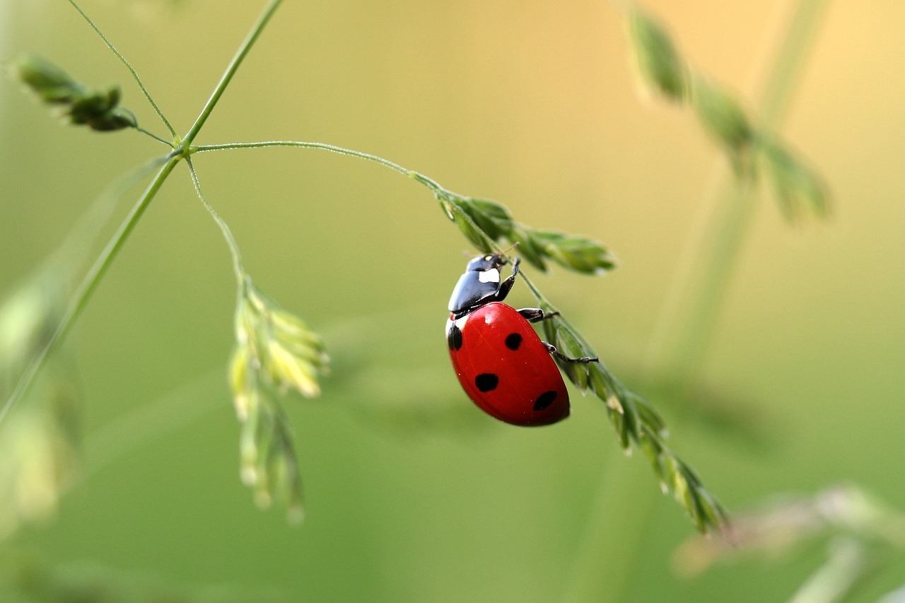
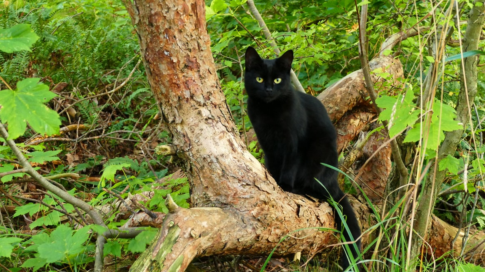
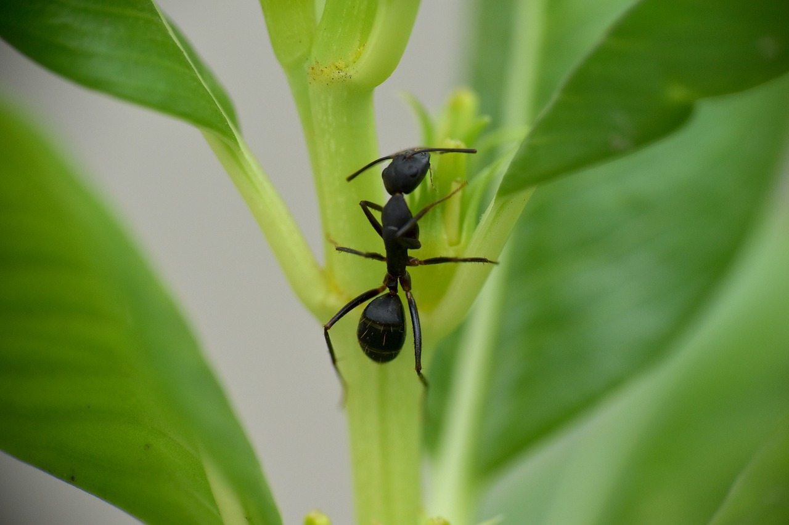
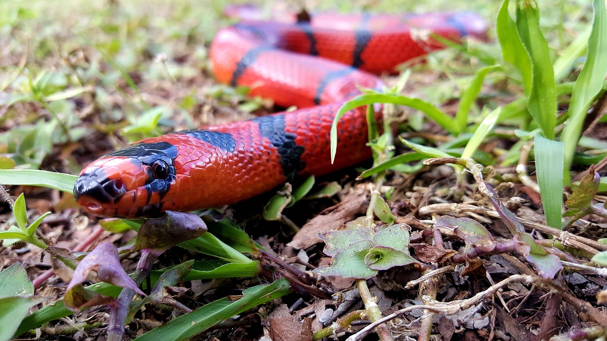

We create a safe space for Explorers, Empathizers and Empowerers.
Intro
The first 3 pillars of Nisy Nice creations are Exploration, Empathy and Empowerment. Each pillar represents an important aspect of our creative process and is represented by different animal symbols (Red Lady Love, Black Cat, Black Ant respectfully). The Red Snake, the fourth pillar in particular ties them all together.
Exploration

Red Lady Love (Lady Bug) - Transformation and Luck
Our content will support the idea that humans have the ability to transform and evolve by exploring their whole self which includes not only their angel side but also, their shadow side. Society often tells people to be ashamed of their negative traits while encouraging people to mostly appreciate their positive traits. However, each person should get to understand and explore their shadow so it doesn’t continuously cause pain, frustration and hate. By transforming how their shadow side works in their life, a person can use it to help themselves as well as the world. The human experiences shared on this platform will show people mastering their inner demons rather than fearing them. We want to encourage all people to be masters of their full identities.
Mastering your shadow side can simply start with facing your negative thoughts. Encouraging yourself to think more positively and practicing affirmations can make your world better. This doesn’t mean that you ignore the reality of the bad stuff in life, it simply means trying to see more good. Having more positive thoughts, can lead to attracting more positive things in your life in order to transform it. Ultimately, you’re making your own luck and who doesn’t need a little more luck?
Empathy

Black Cat - Ancient Wisdom
The creative works produced on this platform also shares the ancient wisdom of love and empathy. Expressing empathy and love doesn’t have to mean you let people walk all over you. Instead, when empathy and love is used in a balanced way, it encourages people to stay respectful even when you’re in a disagreement. It allows a person to practice tolerance and understanding while still having boundaries with another person. That is why there is tough love or what we like to call on this platform “tough niceness”. Sometimes people have to advance another person’s welfare by enforcing certain constraints on them and requiring them to take responsibility for their actions. Tough niceness not only allows boundaries by starting with self love and knowing your desires, it also allows you to love and assist others. With the proper use of empathy and love, it encourages the ancient wisdom of communication, compassion and compromise which leads to a more harmonious society.
Empowerment
Black Ant - Patience, Building, Community, Prosperity
We want to empower you with content that inspires you to let go of things that are no longer serving you. Change takes time and we understand letting go of habits that are holding you back takes a lot of patience and discipline. It takes not only will power to evolve, but also community. Let us be the safe community to assist you in building a better version of yourself. As you grow into a better being, watch all the good come to you starting with love, hope and wealth.
ALL Together
Red Snake - Healing and Wholeness
Making my health a priority lead me to lose 60 pounds and rethink my relationship with food, money, my family among many other things. This journey made me not only want to put cleaner things into my body, but also outside my body as well. So, I started to make more of my meals and also more skincare products. My new focus on health led me to continuously heal many aspects of myself physically, mentally, emotionally and spiritually by facing my shadow side head on. Now I feel a lot closer to being my whole self rather than a fragmented self that lives in constant fear. Therefore, any space I create should allow people to feel whole too.
So, if you’re bigoted, a binge eater, selfish or just a plain living being that wants to evolve, then this is the place for you. Here you can find the courage to let go of whatever is no longer serving you. This platform is a safe space for explorers looking to expand their horizons by hearing new ideas, empathizers who want to connect through the human experience and empowerers, who want to use their lives to encourage others to transform for the better.
Overall, exploring new ways of being in the world, practicing more empathy for myself, and empowering myself to take charge of my health forced me to go through a rebirthing process that made me a better person. This platform will encourage and support those going through a rebirthing process too, so that that they can be one step closer to wholeness.